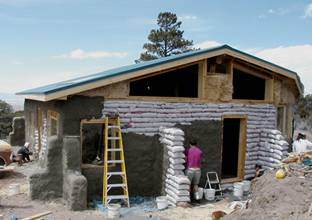
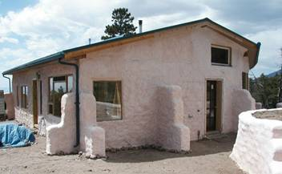
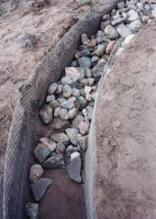
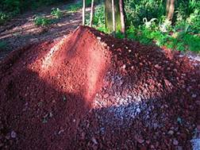
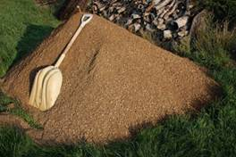
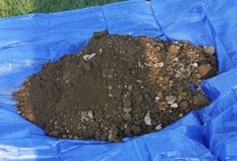
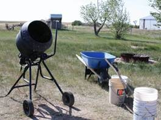
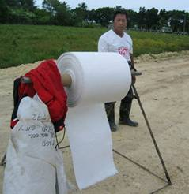
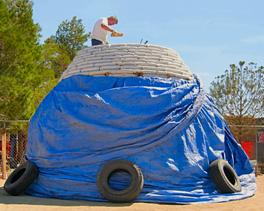

Project Types: Earthbag Homes or Buildings
 
Baraka Burrill’s House
http://www.earthbagbuilding.com/projects/baraka.htm
According to Nader Khalili (Cal-Earth Institute) and Phil Vittore approximately one third of the people of the world live in houses built with earth, and tens of thousands of towns and villages have been raised practically from the ground they are standing on. Today, world consciousness about the use of natural resources and the new perception of building codes as the steward not only of individuals’ safety, but of the planet’s equilibrium, are leading us into the new millennium of sustainable living.
Strength of Earthbag Buildings:
Nader Khallil has demonstrated the structural integrity of earthbag dome. Under static testing conditions simulating seismic, wind, and snow loads, the tests exceeded the 1991 Uniform Building Code by 200 percent. These tests were done at Cal-Earth, California Institute of Earth, Art, and Architecture, under the supervision of the ICBO (International Conference of Building Officials), and monitored in conjunction with an intendment engineer.
Also, earthbag buildings have been proven to withstand the ravages of fire, floods, hurricanes, termites, and earthquakes. The earthbag system, in conjunction with the design of monolithic shapes is the key to the earthbag structural integrity.
Materials for Earthbag Construction
Earth/Dirt Material for Earthbag Construction:
 
 
Different materials have been successfully used for earthbag construction such as sand, dirt, crushed volcanic rock (scoria); etc. However, to pass the test that is needed for seismic design categories D, E and F, bags must be packed with different mixes of fluent, particulate material. These include earthen, cementations, manufactured and recycled materials that form into a permanent block. A good mix is approximately 70% sand and 30% clay.

Structural Design for Earthbag Homes and Buildings
A mechanical mixer is recommended if different material such as sand and clay need to be added together to get the right mix.
Barbed Wire or Masonry Joint Reinforcement
To prevent the earthbags from sliding relative to each other in different course, barbed wire is always used between earthbag courses.
Barbed wire
Masonry joint reinforcement

Notes for Barbed Wire
- Use the heavy 12 ½ gauge, four-point, is better than the 15 ½ gauge.
- Use two strands/lines of wire between courses/raws.
- At corners, use an L-shaped barbed wires or joint reinforcement to overlap with the barbed wires from each wall. Or use continuous wires. Overlap length should be at least two feet.
Testing of Materials for Earthbag During Construction
Ransom Ranch Dome by Marcia Gibbons
from marciagibbons.wordpress.com
It is recommended that a testing program is developed for each project to test the quality of the soil/soil-mix used for earthbag construction. This is a particularly important if a building permit is needed in Seismic Design Category D, E, and F.
Bags

Type of Bags to Use
Q: I am considering building a small earthbag dome with tubular bags. The fact is that here in Italy, the only tubular material I can find is polyethylene, not polypropylene. Have you any experience with polyethylene? What could the difference be?
A: I have no experience using polyethylene bag material; I have only used polypropylene. I know that polyethylene is the most common type of plastic in use today, and that it comes in many different formulations, each with different characteristics. For earthbag work you want these qualities:
Strength–can withstand considerable pressure without stretching or breaking.
Durability–will last for hopefully centuries without degradation, especially when protected by a covering of plaster, and is not adversely affected by moisture or normal temperatures.
Low cost–not too expensive for common use.
Availability–readily available in a form that can be used. I suggest that you check with the manufacturer of the material in question and see how it compares to polypropylene, which rates very high in each of the categories.
Q: Looking at bags, I see gusseted and non-gusseted available. I’m assuming the standard for construction with earth bags is the non-gusseted. Is this correct?
A: I’ve used both the gusseted and the non-gusseted bags, and actually prefer the gusseted ones because the base of the bag doesn’t produce pointed protrusions that need to be hammered back into the wall to make it smoother before applying a plaster.
Q: I would imagine that using Polypropylene would not be very ‘green’ because it is a ‘plastic’; how can your building be properly ‘breathable’?
A: The poly bags are certainly a plastic, so in that regard they are not very “natural”. Burlap bags are more natural. However, I feel that their use is justified by their superior strength and rot-resistance over time. They actually do breathe quite well because the material is woven from strands of fiber that allow air flow.
Q: I would like to build a home with stabilized earthbags and was wondering if you had any experience using natural materials such as burlap or jute instead of polypropylene bags/tubes.
A: I don’t have any personal experience using bags other than polypropylene, but I know of others who have used jute or burlap bags. These bags are actually more resistant to UV deterioration but less so to moisture than the poly bags. This shouldn’t matter, however, if you are planning to stabilize the fill material. The natural bags can be more expensive as well.
Q: What is the ideal width of an earthbag wall or the recommended dimensions of the bags for this application?
A: The earthbags that I have used are designated as 50 pound rice bags, and are about 17 inches wide when flat and 32 inches long. This size works well, but is not critical; the bags could be somewhat larger or smaller, but I wouldn’t go much smaller or the stability of the wall might be questionable. Larger bags would be more stable, but take more material to fill them.
Q: Could you please tell me which kind of polypropylene bags are more suitable for soil cement: a) the ones that are kind of porous (such as those for rice or corn) or b) the ones that are kind of impervious (such as those for flour or sugar)?
A: I would vote for the more porous ones, because they will allow any damp material to dry our better.
Q: I live in Arizona; where is a good place to purchase polypropylene earthbags for building?
A: I’ve been getting them as misprinted 50# rice bags, in bales of 1,000 from Inpack, at 800-622-3695. They can UPS them.
Q: If we use a concrete/sand mixture can we use paper feed bags instead of the poly? It seems that the poly bags with that type of mixture are just to hold the form until it dries- is this assumption correct? If I am right about this then wouldn’t it be the same idea using unlined paper feed bags? These are much cheaper, about $160 per thousand, and have a wet load tolerance of 50 lbs.
A: You are right that with filling the bags with either dampened adobe soil or a concrete/sand mixture, the bags only hold the material in place until it sets up. However, I would have a couple of concerns about using paper bags for this purpose. Will they hold up well enough when damp? A 50 lbs tolerance may not be sufficient for the perhaps 100 lbs of material they would be filled with. The polypropylene bags that I used were misprinted rice bags, which cost me about $190/thousand and they are extremely strong and durable if kept out of the sunlight.
Q: What will happen to the structure when the bags rot after some time? I am afraid that when the bags are worn out or rot then the remaining earth structure will no longer have strength to hold on together and will be vulnerable to damage due to rain, wind, excessive sun (long period of drought).
A: The answer to your question depends on what material the bags are made of, and what they are filled with. If the bags are filled with a moist adobe soil, or stabilized soil, then it doesn’t really matter if the bags rot, because the structure will remain solid. If the bags are filled with a looser material, then you should use polypropylene bags rather that burlap or jute, because it will not rot over time. You do need to be careful to keep the sunlight off the bags as much as possible and plaster them with something to protect them from the UV in the sun.
Q: I have purchased bags to begin a small home for my son and me. The bags are 14×21 and 16×31. 1000 of each. I am now worried the smaller bags will be of little use. Is it possible to use these for earthbag building, possibly alternating rows?
A: The larger bags are better for insulation and stability. The use of small bags that form 12″ walls are really too small for most projects other than low garden walls and such. Nearly all of the significant earthbag projects that I am aware of use larger 50-100 lb. bags that measure closer to 15″ X 24″ X 5″ when compacted. I wouldn’t advise staggering the rows, as it is better to have a solid base for all of the courses. You might consider using the smaller bags near the top of your walls, or for interior partitions or something, if necessary.
Q: Does it matter that burlap/hessian bags rot if you intend to cover exposed surfaces in cob or lime plaster and that the bags will be filled with mostly clay sub soil when building an earth bag structure?
A: In this case, it probably doesn’t matter, as long as the earthen material is kept absolutely dry so that potential deformation of the wall is not an issue.
Q: I am curious if you know if the long sandbag tubing that CalEarth uses is more structurally sound than the large rice bags. Are there any benefits to one over the other? Disadvantages?
A: The long tube bags that CalEarth typically uses have both advantages and disadvantages. Their use does reduce the number of seams between individual bags, and for this reason might contribute to greater stability of a wall. To my mind, this is about the only advantage. I find them much more cumbersome to actually fill and place on a wall, and they practically demand that at least two people are involved in the process. A major problem that I encountered was that they tend to roll as a unit when filled with loose material, like the crushed volcanic rock that I used in my bags. This is not so much of a problem when they are filled with adobe soil like CalEarth uses. Individual bags have a seam at the bottom, which gives each bag a distinct orientation that tends to keep it from rolling this way.
Q: We used polypropylene sandbags when I was in the Army. My experience from those days was that the poly bags installed in a wall and then bermed with earth (so that there was no UV exposure) would deteriorate fairly quickly if the soil in contact with them was consistently damp.
A: When I removed some of the earthbags that I had used to make a dam some 6 years prior I found the polypropylene material to be as strong and pliable as the day I put it in the ground. Roots from the nearby tree had found their way into the bag, which was partially covered by a sheet of plastic, so any moisture that got in there did not easily evaporate. Of course this is a short time for such a test, but none-the-less you would expect some degree of deterioration from the moisture contact over that many years if it were to occur. I did a bit of internet research, and came up with the following quotes:
“The main concern for PP geotextiles is to prevent thermo- and photo- degradation by using proper stabilizers.”
“Polymer degradation can also result from mechanodegradation, which is caused by the application of stress such as high shear deformation. The stress-induced degradation may result from comminution (grinding, milling, or crushing), stretching, fatigue, tear abrasion, or wear. Nonetheless polypropylene has good chemical and hydrolytic resistance.”
I think it is quite likely that the bags you remember were already compromised by UV exposure, as it really only takes a few weeks of being in the sun for this to occur. PP earthbags are currently being used as foundations for strawbale and other types of alternative structures, and often they are filled with gravel to avoid wicking action upward, so the fill is not consolidated into a firm material, like rammed earth and the integrity of the bag is crucial to the longevity of the building, as it is with my earthbag house, since the bags are filled with crushed scoria.
Just a few days ago I checked the exposed poly bags in our old pantry in Colorado, which are not exposed to sunlight, but are out in the interior air and occasional light. I gave one of the bags a good poke with my finger and it felt as strong and supple as the day I stacked in on the wall, which was over a decade ago.
Q: Mark is also a distributor of Cal-Earth bags, which I believe have some kind of patent. I am tempted to trust him that they are superior to regular bags, and without knowing exactly why, I will most likely use them in my earth dome building in Hawaii. But I’m not quite sure. I will use them in El Salvador for my sister’s project. It might be too expensive to ship the rolls in a container.
A: I actually don’t think the Cal-Earth bags are any different than other bag material…they have just been printed with the Cal-Earth words. Polypropylene is polypropylene, even if some of it has been coated with UV retardant. Nader did not patent this…he just realized that you could use the long tubing material for building instead of individual bags, which are also made from the long tubing. You can buy these rolls from the manufacturer for less than you can from Cal-Earth. I prefer to use the misprinted individual bags, which are cheaper yet.
Q: After watching your DVD, this is my own conclusion of why Cal Earth bags are superior. It’s not that Cal Earth bags have a superior manufacturing process than everyone else. It’s just that Cal Earth is not really selling bags, they are instead selling you the rolls from which you make your own bags.
I could see myself trying to hold together hundreds of small bags. It would not be easy, and if I am not that careful, I would have several bags sliding over on a daily basis. At Mark’s earthbag dome in the Big Island, we had close to zero bags sliding over. Most of the time we were filling out long tubes, which is another name for a custom size big bag. Sometimes the whole row was one big tube, and as we went up the tubes got smaller.
Part of my job was to use scissors to cut from the roll, and then using a needle and wire I closed one end of the bag, and then I was ready to start filling it with earth. And the big help in making sure the tubes did not slide over was use of barbed wire. When the tubes are still wet, it is guaranteed that they are going to slide inwards if you don’t use barbed wire. We found that out because of drying times which took close to a day, we could not do more than 4 rows per day.
We used small custom made bags on very few occasions, as fillers in difficult angles, and of course at the very top of the dome. So, I think that anyone else can get the same results if they buy rolls of material to make the bags yourself, instead of buying hundreds of small bags all the same size at pennies each. Yeah, I don’t see why anyone else besides Cal Earth cannot sell rolls of bag material.
A: From my experience, I would say that with individual bags or long tubes, one is not superior to the other…they are just different and have different attributes. I used the small bags, partly because I worked mostly alone and it was way easier to do this with the smaller bags. I think you need more of a team (at least 2 people) to effectively use the tubing. I could fill the small bags with the light-weight volcanic rock that I used to fill them, carry these to wherever I was working and place them easily. I never had any problems with bags slipping off. I kept them laid horizontal and used the barbed wire, so they didn’t really want to slide. I did have a problem with the tubing when I tried to use it once, because the loose material I used as fill did allow the whole tube to actually roll off the wall. Without the sewn hem at the bottom of each bag, there was a tendency for the tube to roll. But then for what you and Mark were doing, I can see how the long tubes were better…so it all depends.
Q: The sandbags I am using are empty polypropylene sandbags ( 14×26″), 1600 UV treated. They have been exposed to the sun from 6am to noon from 2 to 17 days. They are covered for the rest of the day. Today the tarp blew off and they were exposed to the hot desert sun. My question is how much exposure will they tolerate before being damaged beyond repair?
A: I used standard, untreated poly bags, and noticed that a detectable deterioration happened after maybe a month of full exposure to the sun. I don’t know what the rating is for the treated products. My rule of thumb was to only leave those bags exposed that needed to be for the construction process, and then covered them up immediately. I also started a first coat of plaster over some of the finished portions as I progressed with the construction, but then I was working on a rather large project.
Q: What size width tube role I should use?
A: Usually what I have seen people using is about 18-20″ wide, when flat, and would be about 15″ wide when filled.
Q: For a wall are individual bags better or should we use long runs of tubes?
A: They both work just fine. Tubes might be slightly more stable or integrated, but with barbed wire the individual bags work well.
Q: Is it possible to find the continuous superadobe fabric tubing or is it better to use individual sandbags?
A: Both the tubes and the individual bags work fine, although there are some differences: tubes take more people to fill and lay them and often cost a bit more; bags are easier to find, fill, and may cost less. There are sources list for both here.
Q: The Hunter/Kiffmeyer book suggests a 17×30 bag as standard, that anything smaller will not do. But that’s for a team (or at least two people) to fill in place; I, on the other hand, will be working alone, so I can’t really be throwing coffee cans of dirt to myself. I assume I’ll be filling bags ahead of time, like the pictures of the Sun House on your website. Unfortunately H&K’s book says the 17×30 bags tamp out at 90-100 pounds, which would be a little heavy for me to lift into place after filling, so I’ve been leaning more toward the standard sandbag size of 14×26. What do you think, is that really too small? Maybe I could do two courses for a thicker wall?
A: (Owen Geiger) I agree with Doni and Kaki. At least 17″x30″ bags are needed for wall stability. 14″ wide bags would be about 12″ wide once filled and tamped, and very prone to tipping over. You could do a double wall, but that’s not very practical. You’re talking about a huge amount of extra work. So keep looking until you get the right sized bags. Also, I suggest getting a helper, even a high school kid or someone who wants to make a few extra bucks. Earthbag building is very labor intensive, and certain steps like building upper walls almost requires another worker. Or you could fill the bags with scoria (lava rock). Anyone could handle bags of scoria by themselves. I’m pushing hard for scoria-filled earthbag construction.
Q: How would I locate used bags?
A: (Owen) Try hard to locate new but used bags. Surely you must have pig farmers, chicken farms, etc. somewhere within driving distance. These places go through huge quantities of poly bags and should be eager to make at least something by reselling them. What do they do with their used bags? Someone is probably buying them up and reselling them — maybe feed stores.
Q: I am carefully reading the instructions and wondering if earthbags are as sturdy as plastic tubing when it comes to the roof for a dome? Is there any difference?
A: Well the earthbags have worked well for me. When they get tamped together with the barbed wire they become a rather solid block anyway. The long tubes might be slightly more stable, but I am not sure of this. They are also more cumbersome to fill.
Q: If a house is built of sand filled plastic bags, will the moisture trapped in the bags cause mold?
A: Actually, the polypropylene bags are a woven fabric that breaths to some extent, so the contents can eventually dry out. Mold usually requires some organic material to subsist, so purely mineral earth doesn’t necessarily provide that.
Q: An ad on Craigslist we have posted looking for donated bags has gained us in upwards of 2000 or more bags ready for pick up over the next week. Should these work?
A: (Owen) Check the bags carefully. They may be fine, but you need to check for good quality, strength, uniform size, etc. Maybe tamp a few trial bags using bags from each source and see how they withstand the tamping process. And be sure to store them out of sunlight.
Q: We’d be using old poly bags, or maybe the long tube-bags from CalEarth — the CalEarth bags are what I’ve worked with before, but jeez they’re pricey! We’re in an agricultural community, so old feed bags are abundant.
A: If you can access used bags in reasonable condition, I would say go ahead and use them. I actually find it easier to work with individual bags…and it is certainly cheaper.
Q: How thick is the typical wall? Does this differ for outer and inner walls?
A: A typical earthbag wall is about 15 inches thick, although this varies with the size of the bag and the thickness of the plaster. Inner walls can be made in a variety of ways, with wood framing, etc., so this varies also.
Q: I have a question about diddling bags. Do you think it is absolutely necessary? I have found a gusseted polypropylene bag 15x5x31 that seems to work just fine. The bags are a bit more expensive but it may be worth the time savings from diddling.
A: I like gusseted bags, as they do keep the bottom end from pointing out. But even with the ordinary bags, the requirement to “diddle” the bags is much overstated and too time consuming I think. I simply took a hammer to the pointy corners and knocked them back into the bag before plastering, and that worked fine.
Q: I notice on the cal-earth website they use continuous woven bag tubing which can be cut into any length of bag required, as well as listing this ‘tubing’ as available in various diameters It seems a good idea, but does it have any real advantages over using ordinary same-size bags for everything?
A: Both the long tubular bags and individual bags work well for most earthbag construction, especially if the barbed wire is used between courses. There might be some slight mechanical or aesthetic advantage to the tubing, but this might be offset by the need to have a crew available to handle the need for continuous feeding and placing of the fill material; one person alone can build with individual bags. Also, the tubing seems to be more expensive, especially if you are able to source used or misprinted bags. The tubes do eliminate any problems occurring with bag bottom corners poking out and needing to be punched back in.
Q: The use of a bag full of whatever to start off a home makes no sense at all; the bag will disintegrate.
A: The polypropylene bags are actually quite stable if kept out of the sun…and in many cases they only serve as an initial form to contain earthen material that then “sets up” sufficiently that the bag is no longer necessary.
Q: How long will earthbags hold up in sunlight?
A: (Owen Geiger) It’s difficult to know for sure how long earthbags will hold up in sunlight. Some brands fall apart pretty fast, as soon as a few weeks. Equatorial and high elevation areas may experience slightly more rapid deterioration due to increased UV levels. From what I have heard and read most bags hold up okay for about 2-3 months. The safest way is to buy tarps or black poly and keep them covered as much as possible.
However, tarps are prone to blowing around in the wind and can be a bit of a nuisance. If you’re doing a large job, then you can either buy UV resistant bags, which cost more, or in the case of vertical walls do one wall section at a time (including adjacent corners) and apply at least one coat of plaster as soon as possible.
(Kelly): One good indicator of how long the polypropylene material will last if exposed to the sun are the tarps themselves, which are often the same material. My experience is that they just get progressively weaker as time goes by, and may show signs of exteriorization after about two months’ exposure and usually by about 8 to 10 months it is pretty easy to punch holes in them with a finger. And these tarps are often supposedly UV resistant. Obviously the best thing is to not take chances and keep the bags covered at all times, except when working on them.
Q: Do plastic earthbag bags off-gas fumes like VOCs, etc.?
A: (Owen) I don’t really know. There’s no discernible smell, and I’ve never read or heard anyone warn of this. A quick search on Google didn’t turn up anything. It’s best to avoid all synthetic materials as much as possible, although in this case most people seem to agree the benefits of earthbags far outweigh any negatives. And keep in mind, the bags make up just a tiny percentage of the over all structure. And even then, they’re buried behind thick plaster.
Ok, back to http://en.wikipedia.org/wiki/Polypropylene#Degradation
So if you were to build your earthbag house in a hermetically sealed sun room (airtight), and if you were to leave your polypropylene walls exposed to sunlight to the point that they fall apart (say 1-3months for non-UV-resistant polypropylene). And all the polypropylene has all dissolved, and then you walked in there and tried to breathe in all the vapors, there is no chance it would do you any permanent harm. Ok, you might be disturbed by the smell and fall and hit your head, or you might get an asthma attack, but if you leave the door open for 5 minutes you’ll be fine. In conclusion, practically everything will outgas, but you’re safe if you open door/window daily (like when leaving/entering). Polypropylene is very safe.
•Disclaimer:
The above statements/ information are just a general preliminary opinion and may not be applicable to your or to any user’s particular project. Users of the above opinions/information assume all liability arising from such use. You should retain the service of Precision Structural Engineering or a local licensed Professional Engineer. We do not make any warranty, expressed or implied, or assume any legal liability or responsibility for its use and/or application.